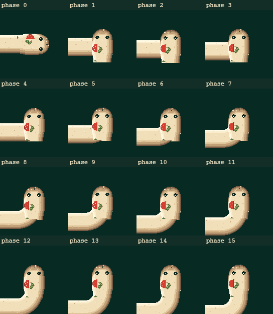
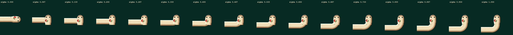
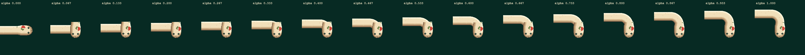
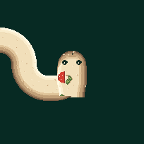

Играть: SMOOTH V2.3 | SMOOTH V2 | GRID SNAP
Все изображения — 1 image pixel = 1 CSS pixel, cell 68 px. Полосы прокручиваются по горизонтали, не уменьшаются. Фаза 0 — завершённое предыдущее направление; фазы 1–15 — новый поворот. Визуального approval пока нет.
Сокет 36 px, offset 32 px, underlap 2 px. Растровая выборка: 216 кадров, пропусков сокета 0, измеренные открытые нормальные сечения 35–37 px; изменения RGBA головы и прямого движения 0. Максимальная Δarea 550 px² (V2: 478, gate: 766). Это выборочные проверки, не доказательство всех возможных контуров.




Метод измерения / ограничения · Растровые результаты. STOP: только human review, без публикации.